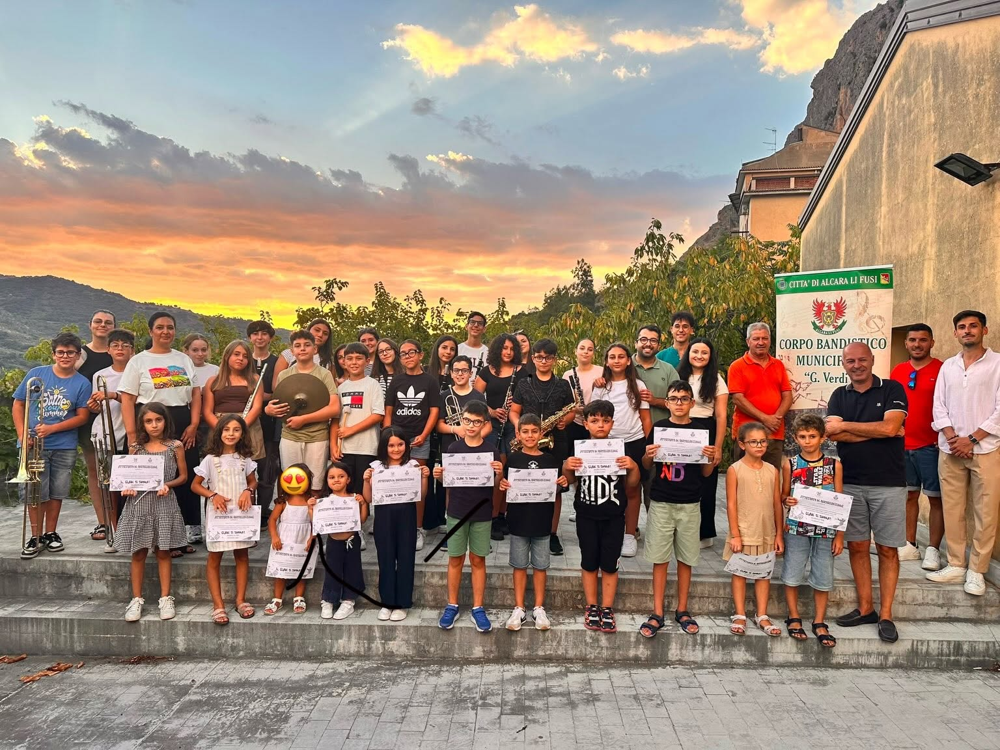
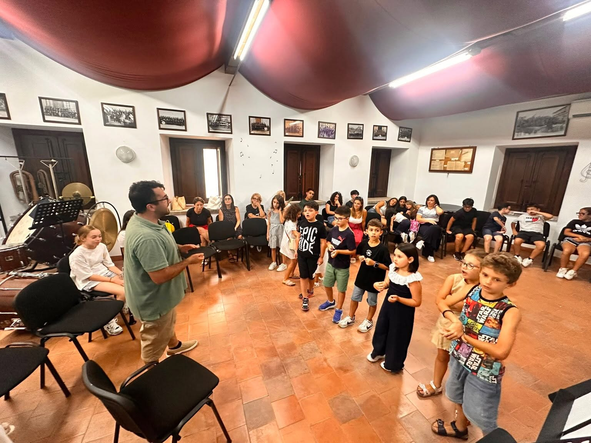
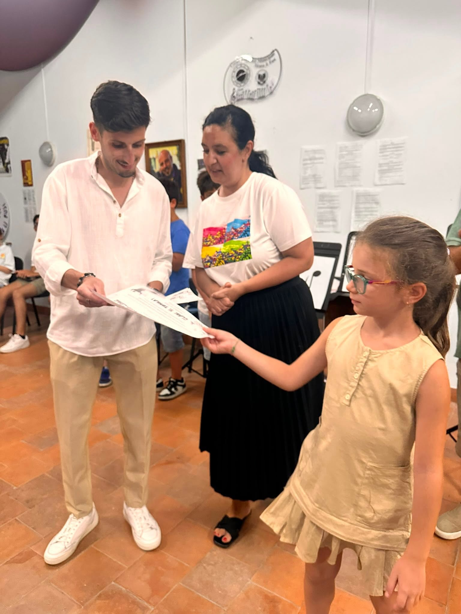
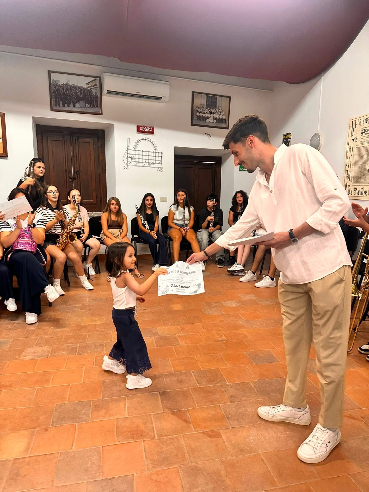
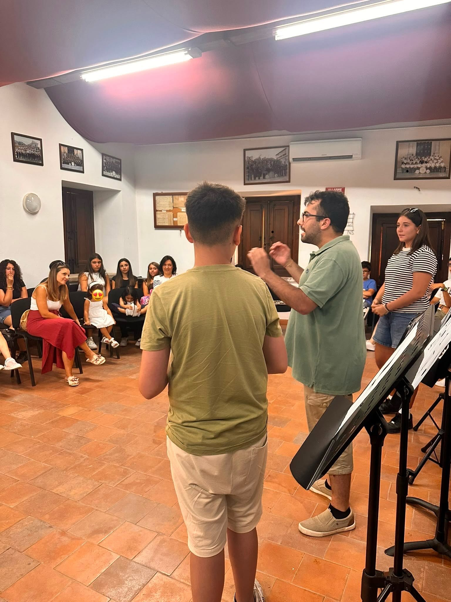
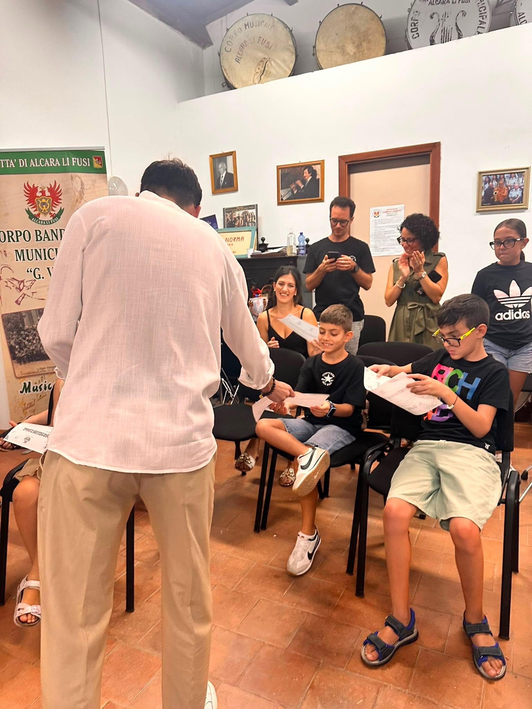
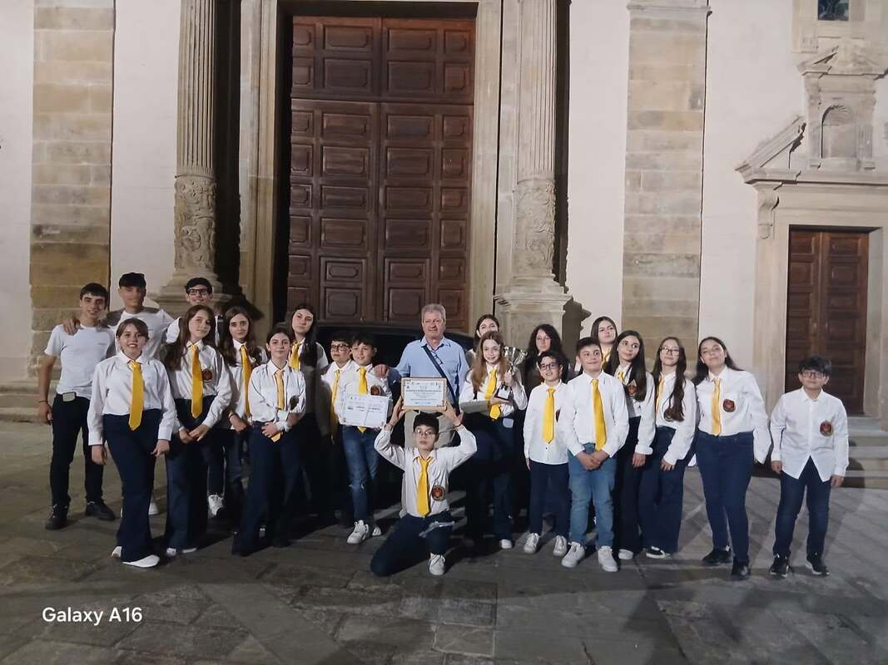
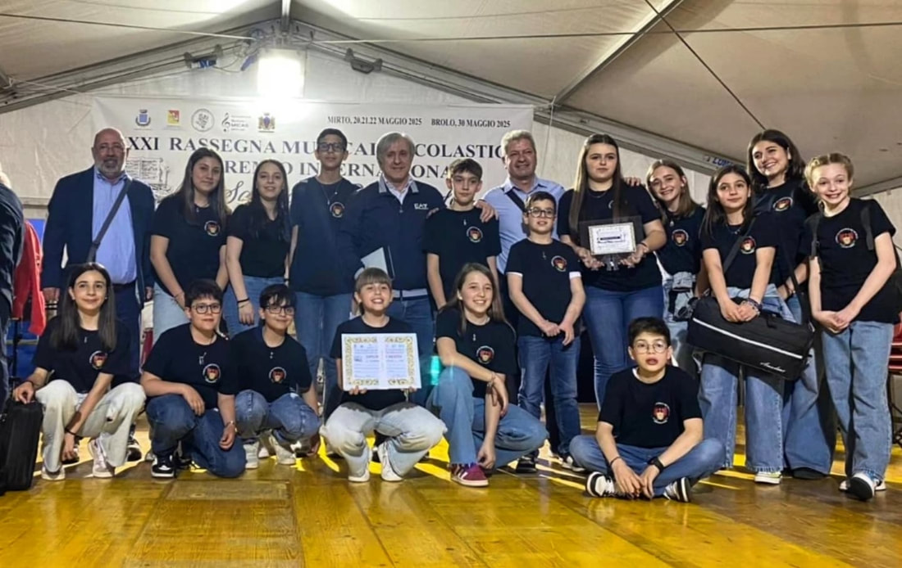
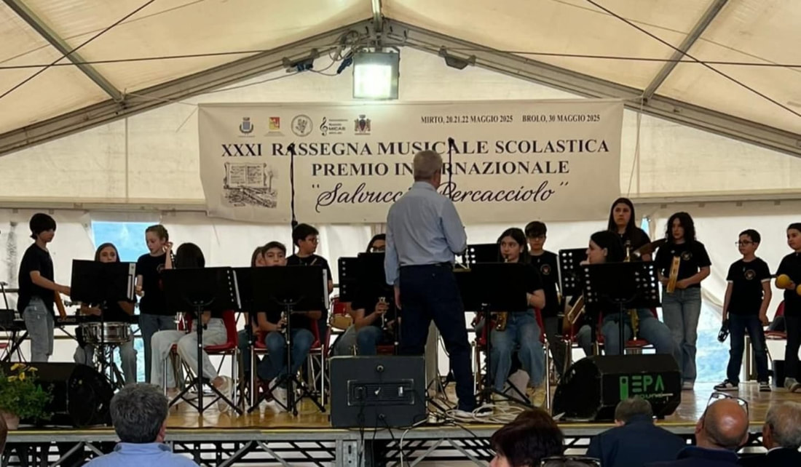

Musica, formazione, passione e condivisione.
Un percorso aperto a tutte le età, guidato dai Maestri
del Corpo Bandistico Municipale “G. Verdi”.
La nostra scuola
La musica si impara, si vive e si trasmette.
La Scuola di Musica dell’Associazione Musicale Alcarese
è aperta a persone di tutte le età.
Le attività sono curate dai Maestri della nostra Banda,
che accompagnano gli allievi nel loro percorso di
apprendimento e crescita musicale.
La Scuola rappresenta un importante punto di incontro
tra generazioni diverse e contribuisce a mantenere viva
la tradizione musicale della nostra Associazione.
Una figura fondamentale
Il Maestro Onorario Giuseppe Parrino
Il Maestro Onorario Giuseppe Parrino è nato nel 1929
ad Alcara li Fusi ed è morto l'8 ottobre 2021.
Ha studiato inizialmente nella scuola di musica bandistica
con il maestro Cipitì e ha proseguito gli studi con il
Piccolo Mi♭ con il maestro Seminara, entrando a far parte
della Banda Municipale Alcarese a 17 anni, nel 1946.
Nel 1977 è stato nominato Capo Banda e da allora ha svolto
anche la funzione di insegnante della Scuola di Musica
della Banda. Fino al 2013 ha formato con successo
90 allievi, consentendo il loro inserimento
in Banda.
In occasione dell'ottantesimo anniversario della fondazione
della Banda, nel 1991, gli è stato conferito un attestato
in riconoscimento del suo impegno, del suo sapere e
dell'opera svolta per il progresso musicale alcarese.
Nell'agosto del 1996 gli è stato riconosciuto dalla Banda
il Diploma di Maestro Onorario, su iniziativa
del maestro direttore M. Saccone.
«Titolo di riconoscenza artistica per una vita dedicata
con passione e virtù al servizio reso con esemplare talento
nel Corpo Bandistico Municipale».
Le sue composizioni
Vecchia banda musicale Alcarese — marcia sinfonica
Desy — marcia sinfonica
Nicolas — marcia sinfonica
Argentina — marcia militare
Due Novembre — marcia funebre
Un'eredità che continua
Al Maestro Giuseppe Parrino il Corpo Bandistico Municipale
deve moltissimo. Ha educato all'arte musicale intere
generazioni di nostri componenti, trasmettendo loro con
passione, lavoro e impegno assoluto un grande amore
per la musica.
Ci ha trasmesso i valori della dedizione e dell'impegno
e ci ha fatto capire quanto sia bello e importante vivere
la musica in tutte le sue forme, soprattutto nella
condivisione, come in una grande famiglia.
Noi possiamo solo dirgli GRAZIE!
Grazie per tutto quello che ci ha dato e per tutto il lavoro
svolto per il bene della nostra Banda.
Grazie per la sua gentilezza e per la sua umiltà.
Grazie, infine, per essere stato un modello da seguire
per tutti noi.
La sua cara Banda.
Il Maestro Onorario Giuseppe Parrino
Ricordi del Maestro
Foto 1 di 19
Clicca sulla foto per ingrandirla e scorrere
La formazione continua
La Scuola di Musica oggi
Oggi la Scuola di Musica prosegue il proprio percorso
di formazione grazie all'impegno dei Maestri che mettono
le proprie competenze e la propria passione al servizio
delle nuove generazioni.
Attraverso le lezioni e il lavoro condiviso, gli allievi
possono avvicinarsi allo studio della musica, sviluppare
le proprie capacità e prepararsi, per chi lo desidera,
a entrare a far parte del Corpo Bandistico.
M° Michele Saccone
Maestro della Scuola di Musica
M° Salvatore Saccone
Maestro della Scuola di Musica
M° Salvatore Gioitta
Maestro della Scuola di Musica
M° Santino Santoro
Maestro della Scuola di Musica
La storia della nostra formazione
Il Maestro Santino Santoro
Nel percorso della Scuola di Musica un posto importante
è occupato dal Maestro Santino Santoro,
che ha accompagnato tanti giovani nel loro avvicinamento
alla musica e nel percorso di preparazione per entrare
a far parte del Corpo Bandistico Municipale “G. Verdi”.
Attraverso il suo lavoro, la sua guida e la sua dedizione,
ha contribuito alla crescita musicale di numerosi ragazzi,
trasmettendo loro non soltanto le competenze necessarie
per suonare uno strumento, ma anche valori fondamentali
come l'impegno, la disciplina, il rispetto e la
collaborazione.
Il suo contributo rappresenta una parte significativa
della storia della nostra Scuola di Musica e del percorso
di tanti giovani che, grazie alla formazione ricevuta,
hanno potuto vivere l'esperienza della Banda.
Il Maestro Santino Santoro
La musica è un percorso che si costruisce insieme:
ogni allievo che cresce e diventa parte della Banda
porta con sé anche il lavoro, la passione e gli
insegnamenti di chi lo ha accompagnato nei primi passi.
I ragazzi entrati in Banda sotto la sua guida
Questi sono i giovani che hanno intrapreso il proprio
percorso all'interno del Corpo Bandistico Municipale
sotto la guida del Maestro Santino Santoro:
Davide Calcò
Ilary Calcò
Ginevra Cavallaro
Carola Dottore
Nunzio Dottore
Davide Faraci
Mariapia Faraci
Nicolò Gioitta
Salvatore Gioitta
Alessandro Marino
Stefano Marino
Salvatore Mustica
Alisia Oriti
Davide Oriti
Nicola Pirronello
Luca Santoro
Mattia Santoro
Alice Vaneria
Enrico Vasi
Valori
Perché scegliere la Scuola di Musica della Banda
La Banda è un’importante realtà di aggregazione, dove
si imparano il rispetto, il decoro e soprattutto il valore
dello stare insieme.
La nostra Scuola non si limita alla semplice lezione:
accompagna gli allievi all’interno di un gruppo nel quale
persone di età e professioni diverse imparano a collaborare,
sostenersi e condividere la passione per la musica.
Una testimonianza
La Banda è famiglia
Rosaria Gianguzzo
Componente della Banda Municipale — Sax Contralto
«La banda non è solo un insieme di persone, suonare non
significa conoscere quelle 7 note.
La banda è collaborare, rispettare i tempi degli altri,
capire che ognuno di noi ha un ruolo ed è importante,
ma che non è nessuno senza gli altri.
La banda è famiglia, è amicizia, è rispetto.
Quindi, cari ragazzi e genitori, pensateci.
Iscrivere un figlio alla scuola di musica non è solo
fargli suonare uno strumento ma è anche farlo entrare
in un mondo di gioia e allegria che porterà sempre
nel cuore!»
Cultura musicale
La Banda come patrimonio culturale
La Banda è una vera e propria realtà culturale che non si
limita alla divulgazione musicale, ma svolge anche un ruolo
importante nella promozione della cultura, nella formazione
e nella crescita della comunità.
Attraverso la propria Scuola di Musica, la Banda trasmette
alle nuove generazioni non soltanto la conoscenza musicale,
ma anche valori come la collaborazione, il rispetto,
la disciplina e il senso di appartenenza.
L'importanza delle bande
Il Maestro Riccardo Muti ha più volte sottolineato
l'importanza delle bande e delle realtà musicali
amatoriali nella formazione culturale e sociale.
Le bande possono essere considerate vere e proprie
piccole orchestre di fiati, capaci di avvicinare alla
musica persone di età e provenienze diverse e di creare
occasioni di incontro e condivisione.
«Imparare a stare in un coro, in una banda, in un'orchestra,
significa imparare a stare in una società dove l'armonia
nasce dalla differenza».
È proprio questo uno dei valori più profondi della nostra
Banda: persone diverse, con età, professioni e percorsi
differenti, che attraverso la musica imparano a suonare
insieme e a costruire qualcosa di comune.
Esperienze e iniziative
La musica si vive insieme
Laboratori, incontri, concerti e momenti di condivisione
della nostra Scuola di Musica.
Un'esperienza da ricordare
CIAK, SI SUONA!
20 agosto
Un pomeriggio dedicato alla musica, alla creatività
e alla condivisione, pensato per avvicinare bambini
e ragazzi al mondo musicale.
Nella Sala Musicale presso il Monastero di S. Andrea
si è svolto un laboratorio musicale dedicato ai più
giovani: un'occasione per giocare, scoprire e avvicinarsi
alla musica attraverso attività coinvolgenti e momenti
di sperimentazione.
A seguire, il concerto in Piazza San Nicolò Politi
ha visto protagonisti i giovani allievi della Scuola
di Musica, che hanno avuto l'opportunità di condividere
con il pubblico il proprio percorso e la propria passione.
Seminare musica oggi significa far crescere nuove
passioni domani.
La giornata in immagini
Clicca su una fotografia per ingrandirla e scorrere l'album di CIAK, SI SUONA!






I nostri giovani musicisti
I risultati della nostra Scuola
1° Premio Assoluto · 100/100Concorso Nazionale "Salvuccio Percacciolo" · Mirto · 2026
Primo Premio al Concorso Musicale Nazionale "Salvuccio Percacciolo" 2026
Congratulazioni ai nostri ragazzi e al
Maestro Santino Santoro
per questo straordinario risultato, frutto di impegno,
preparazione e passione per la musica.
La Scuola di Musica del Corpo Bandistico Municipale Alcarese
conferma la propria voglia di migliorarsi, misurarsi e divertirsi
all'insegna della musica aggiudicandosi, con punti
100/100, il 1° premio assoluto
al Concorso Nazionale "Salvuccio Percacciolo" di Mirto.
Questo successo, frutto di impegno e determinazione, dà lustro
alla cultura musicale Alcarese e crea un continuum con il lavoro
e l'ambizione del nostro Corpo Bandistico, pronto ad accogliere
con gioia questi ragazzi meravigliosi nel mondo "dei grandi".

Clicca sulla foto per ingrandirla
1° Premio · XVIII EdizioneConcorso Nazionale "Maria Grazia Cutuli" · Crotone · Maggio 2026
Primo Premio alla XVIII Edizione del Concorso Musicale Nazionale "Maria Grazia Cutuli"
ORGOGLIO ALCARESE: I NOSTRI RAGAZZI CONQUISTANO
IL PRIMO PREMIO!
La gioia è immensa e l'emozione ancora di più! Con immenso
orgoglio, noi, Corpo Bandistico Municipale “G. Verdi” di
Alcara li Fusi festeggiamo i ragazzi della nostra Scuola
di Musica, che hanno conquistato il
Primo Premio alla XVIII Edizione del
Concorso Musicale Nazionale “Maria Grazia Cutuli” che si
è svolta nel mese di maggio del 2026 a Crotone!
Partiti con la voglia di mettersi in gioco e di vivere
un'importante esperienza di crescita, i nostri giovani
musicisti hanno superato ogni aspettativa, dimostrando sul
palco non solo un grandissimo talento, ma anche una maturità
e una passione straordinarie.
Un ringraziamento speciale va al M° Santino Santoro, che con
dedizione, pazienza e guida sapiente ha accompagnato i ragazzi
in questo percorso, valorizzando il lavoro svolto durante
tutto l'anno.
Questo traguardo non è solo una vittoria in una competizione,
ma la conferma che l'impegno, il sacrificio e l'amore per la
musica ripagano sempre. Siete il futuro della nostra
associazione e della nostra tradizione bandistica, e non
potremmo essere più fieri di voi!
Grazie ragazzi per aver portato così in alto il nome di
Alcara Li Fusi e della nostra realtà musicale. Continuate
a suonare con questo entusiasmo e a farci emozionare!
Clicca su una foto per ingrandirla e scorrere l'album
2° Premio · 94/100Premio Internazionale "Salvuccio Percacciolo" · Mirto · 22 Maggio 2025
Secondo Premio — 22 maggio 2025
Partecipazione degli studenti della nostra Scuola di Musica
alla Rassegna musicale scolastica Premio Internazionale
"Salvuccio Percacciolo" di Mirto.
Piccoli Grandi "Banditi" crescono!
Congratulazioni ai meravigliosi ragazzi della scuola di musica
del nostro Corpo Bandistico, guidati dal Maestro Santino Santoro,
per essersi aggiudicati il 2° premio, con
votazione 94/100, al Premio Internazionale
"Salvuccio Percacciolo"!
La musica è un essenziale mezzo di educazione e di crescita
musicale ma soprattutto umana.
Siamo felici che tanti giovanissimi credano fortemente in
questi valori, nel potere della musica di unire la passione
alla dedizione e alla cultura del lavoro, ma soprattutto di
congiungere tanti ragazzi che condividono lo stesso amore
per il pentagramma.
Complimenti dunque ai nostri piccoli Bandisti e a tutti i
partecipanti, siete il nostro avvenire.


Clicca su una foto per ingrandirla e scorrere l'album


.jpg)